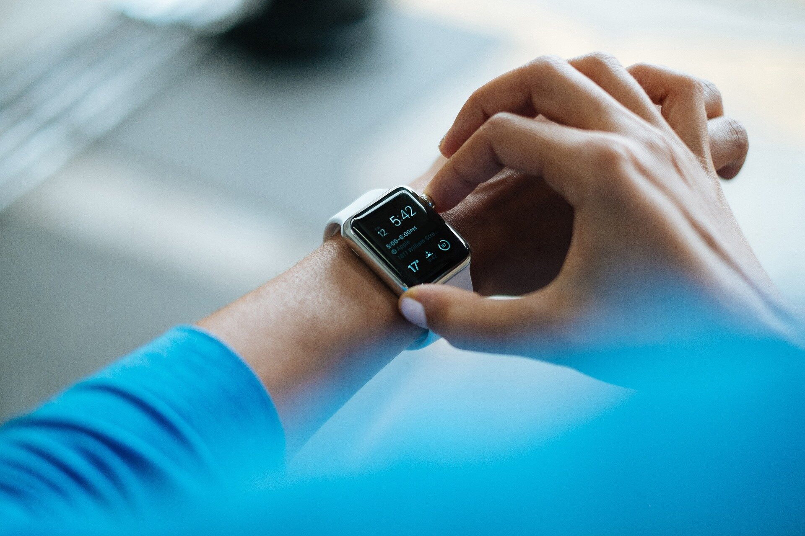

Binishaan Basnet on 1/7/2025
In the recent times, the watch industry has seen huge growth in the number of people that buy smartwatches. One of the most popular reasons that people look to buy a smartwatch is to track fitness. Many smartwatches can do exactly what most popular fitness trackers do, but with the added benefit of receiving notifications and other mobile phone functions. This blog post will further discuss about the rise of smartwatches and their influence on the watch industry. The evolution of wearable technology has brought a huge shift in the watch industry, with smartwatches leading the race. These watches combine keeping record of time with advanced features as a bonus that keep users hooked on them. These modern watches have redefined the industry norms and changed the definition of watch-wear as a fashion icon.
Smartwatches have grown as an important aspect int the watch industry. With their ability to almost everything that a mobile phone can do they have become more than just a device to keep track of the time. They offer a wide range to features that hooks today's generation needs. One of the main reasons why people are attracted towards smartwatches is because of their ability to easily sync with mobile phones. Users can pick up calls, reply to messages which eliminates the need of picking up their mobile phones to check. This feature provides convenience which comes in handy when reaching mobile phone isn't possible or impractical. Another major advantage of smartwatches is fitness tracking. These watches can monitor heartbeats, count steps and track distance and also measure sleep patterns. Due to this smartwatches have been a preferred alternative for people trying to lead a healthy lifestyle.
Today's smartwatches provide high resolution touch-screen, voice-recognition, GPS navigation and some even have the ability to make contactless payment. Smartwatch operating systems have developed to offer a user-friendly experience. Top companies have developed very appealing interfaces and optimized app ecosystems that enhance the functionality of the watches. Users are able to customize their faces, download apps for productivity, entertainment, heath and many more. The modern consumer increasingly values practicality and technology integration in everyday accessories.
A key trend driving the popularity of smartwatches is the increasing demand for personalized, lifestyle-centric technology. Consumers are now seeking devices that align with their specific health, fitness, and productivity needs. This trend is particularly evident in younger demographics, where smartwatches are seen as essential tools for balancing work, fitness, and personal interests.
The rise of smartwatches has undoubtedly transformed the watch industry, bringing innovation, functionality, and style together. As, the industry continues to improve smartwatches will remain as a symbol of progress of the watch industry. Their ability to adapt to user preferences, combined with the continuous advancements in technology, ensures their growing popularity and dominance in the market
{kind=link}